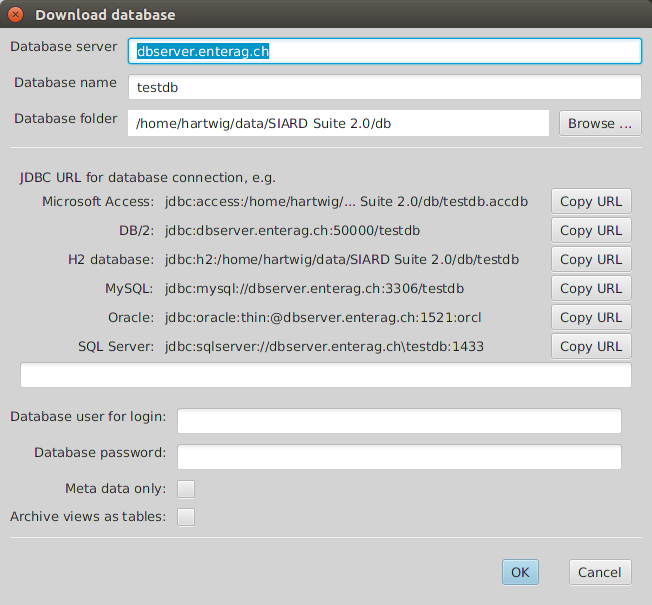
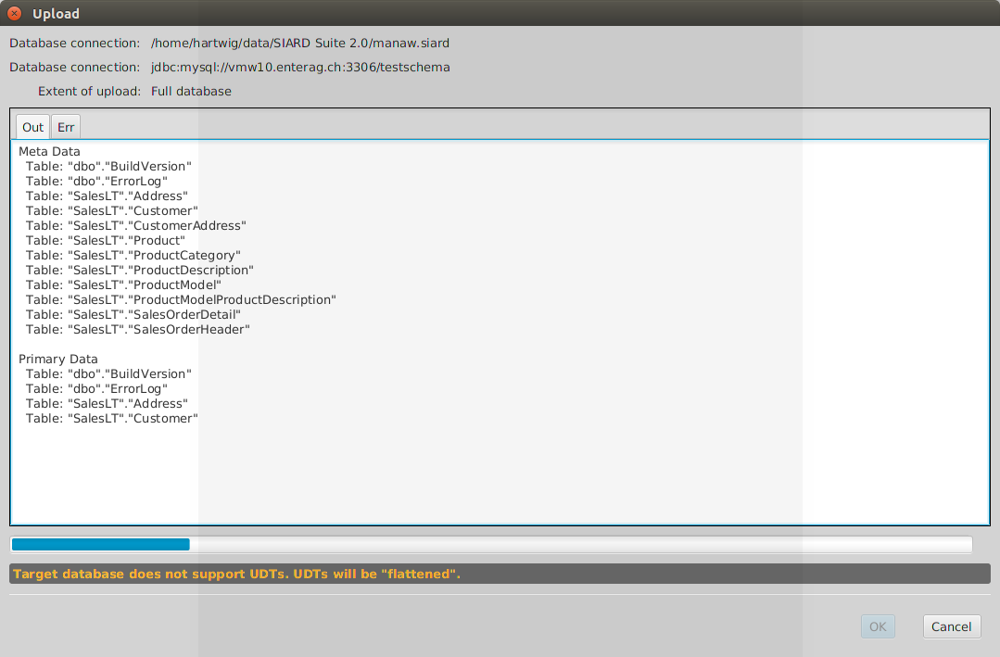
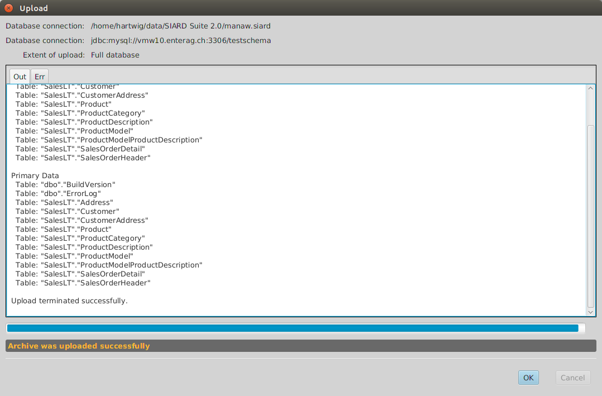
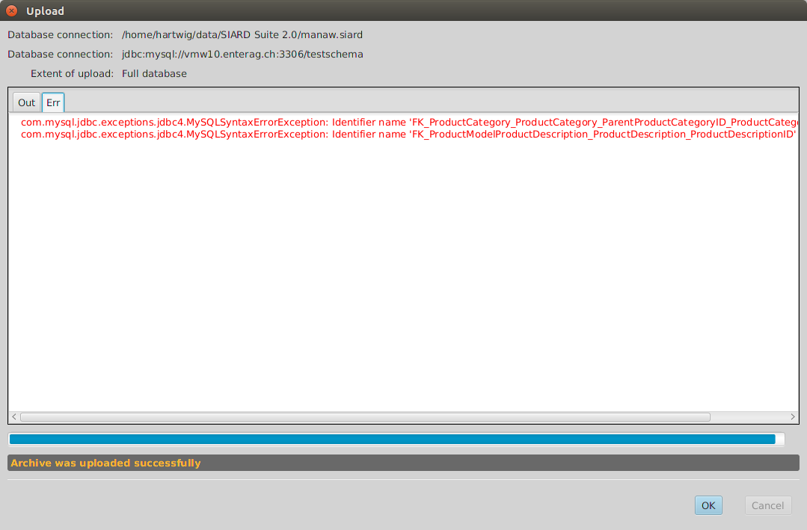
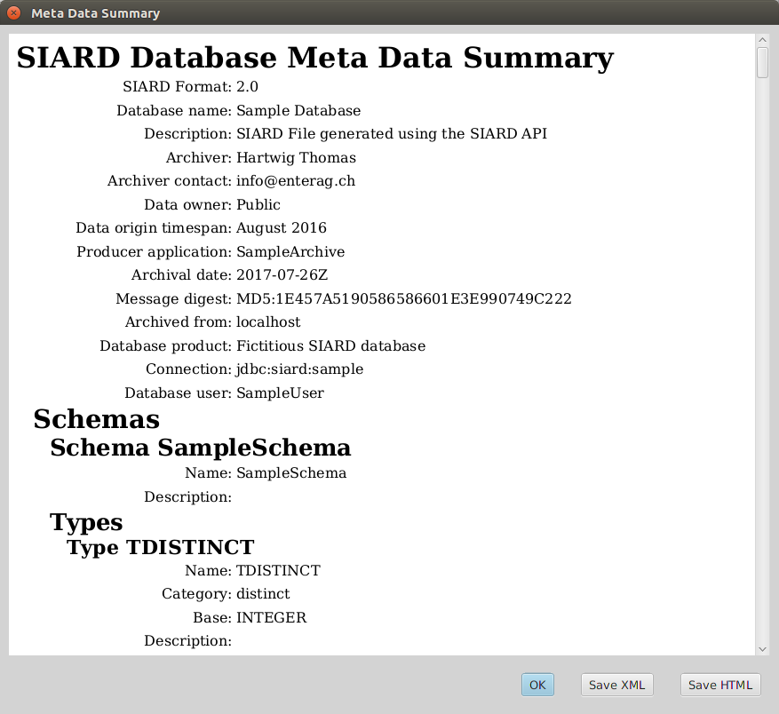
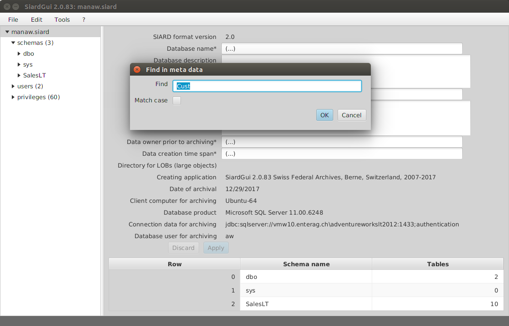
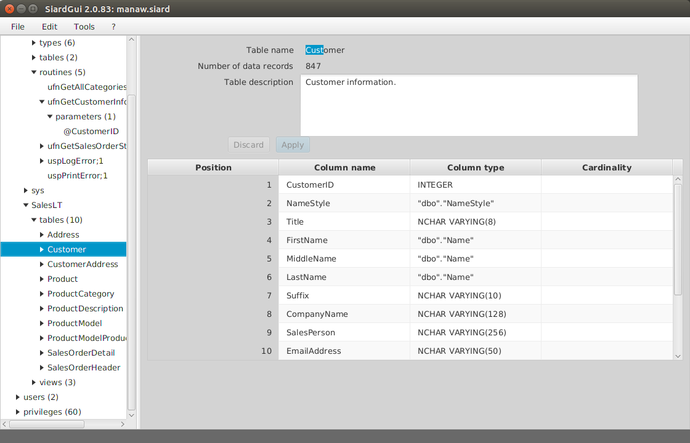
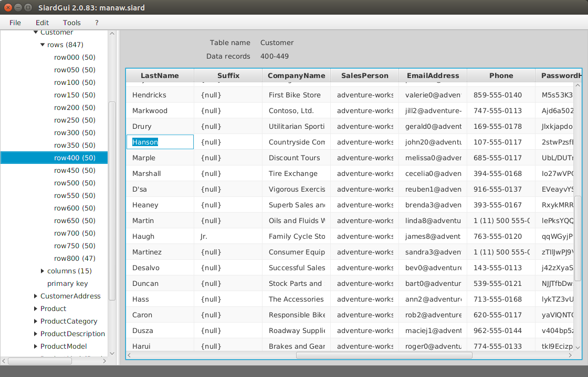
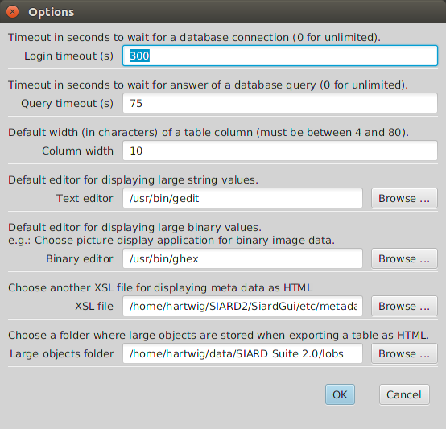

SIARD Suite 2.2 - Menu of SiardGui
The following menu items are available in SiardGui:
- File / Download ...
- File / Recent downloads
- File / Upload ...
- File / Recent uploads
- File / Open ...
- File / Recently opened
- File / Save
- File / Close
- File / Display meta data ...
- File / Augment meta data ...
- File / Exit
- Edit / Copy all
- Edit / Copy
- Edit / Export table ...
- Edit / Find in meta data ...
- Edit / Find next in meta data
- Edit / Search in primary data ...
- Edit / Search next in primary data
- Tools / Install ...
- Tools / Uninstall
- Tools / Language
- Tools / Check integrity ...
- Tools / Options ...
- ? / Help
- ? / Info
The menu items are disabled when they are not applicable to the current situation. Thus, initially, only Download ... and Open ... are available.
File / Download ...
When this menu item is chosen, a dialog is displayed where the connection data for the database can be entered.
The long text entry field in the middle must be filled with a JDBC URL and the database user for archival with password should be given. If only the meta data are to be downloaded (e.g. for a preliminary examination of the extent of the database) the box Meta data only must be checked. If views are to be archived as tables, the box Archive views as tables must be checked.
The server name, database name and database folder above only serve to help construct a correct URL for the target database management system (DBMS). Changing them changes the sample URLs displayed for each DBMS. Clicking on the copy URL Button next to the sample URL copies it to the input field for the JDBC URL.

However, any string can be entered as JDBC URL manually. This allows for site-specific security configurations such as Windows login or Kerberos. The vendor-specific definitions of JDBC URLs must be consulted if the simple standard presented here is insufficient (v. Database Management Systems).
It is generally inadvisable to use the database administrator user (DBA, root, dbo, SYSTEM, sa, dbadmin, ...) for downloading a SIARD archive. The extent of the SIARD archive is defined by the objects to which the archiving database user has read-access. The global database administrator usually has read access to all databases on the system as well as numerous system tables that should not be archived. Therefore it is important to prepare the download by choosing or creating a suitable archiving user.
If the connection cannot be established, the dialog is redisplayed until a valid JDBC URL has been entered or Cancel was pressed. If Meta data only was checked, a temporary SIARD file is created automatically which will be deleted when the program terminates. (However, the downloaded meta data can be edited, displayed, and exported before closing the file.) Otherwise the name and location of the SIARD archive to be created must be chosen.

Then the download starts.

If the download was successful, the dialog can be closed pressing OK and the data downloaded are shown in the main window. There additional meta data should be specified giving at least a name for the database, the data owner prior to archiving and the time span during which the data was created.
Also, if the connection could be established successfully, the JDBC URL used is entered in a list of most recently used connection strings, which is available under the next menu item.
File / Recent downloads
The most recently used connection data for download is available using this menu item. Choosing one of them opens the connection dialog with the JDBC URL and the database user filled in. Only the password must still be entered.
File / Upload ...
When this menu item is chosen, a dialog is displayed, where the connection data for the database can be entered.

The JDBC URL can be combined using database host, database name and database folder and then copied in the same way as for the download connection dialog. As the content of the SIARD file is independent of the DBMS from which it was downloaded, the data can be uploaded to a different DBMS.
In addition one can check the option that database tables and types with the same name may be overwritten. This is dangerous if one connects using a database administrator account with very many privileges. On the other hand it is useful if a previous upload is to be repeated.
If Schema only is checked, only the schemas, types and empty tables are created without uploading any primary data.
On the bottom of the dialog a list of all schemas in the SIARD file is displayed. Here the names of the schemas of the DBMS can be entered that shall receive the data of the schemas of the SIARD archive. These or schemas must have been created prior to the upload. The database user entered in this dialog must have the privilege to create types and tables in these schemas. The database user entered must have the privilege of creating types and tables in the schemas entered here. It is therefore often easiest to choose the root user for the upload.
If the target DBMS does not support UDTs or ARRAYs, the data will be "flattened" on upload, i.e. each UDT or ARRAY is uploaded by creating a separate column for each component.
When the creation and upload of types and tables was successful the upload is considered as successful. Some types or tables may have been renamed to accommodate length limitations etc. of the target DBMS. In that case the long suffix is replaced by a number.
An attempt is only made at the end to enable the constraints. This may fail because one DBMS may have more strict rules than the other. Such a failure is displayed in the Err of the upload dialog.
If the upload was successful, the JDBC URL used is entered in a list of most recently used connection strings, which is available under the next menu item.
File / Recent uploads
The most recently used connection data for upload is available using this menu item. Choosing one of them opens the connection dialog with the JDBC URL and the database user filled in. Only the password and the schema mapping must still be entered.
File / Open ...
Choosing this menu item opens a file selector where an existing SIARD file can be chosen. After it is opened it is displayed in the main window where meta data can be amended and the primary data can be browsed.
If a SIARD file could be opened or downloaded successfully, its name is added to a list of most recently used files which is available under the next menu item.
File / Recently opened
Choosing one of the most recently used files opens it immediately in the main window.
File / Save
If the meta data of the SIARD file has been changed, the changes are only written to the disk when they are explicitly saved.
Temporary SIARD files created by downloading with option Meta data only cannot be saved. However, their meta data can be edited, displayed and exported before closing the file.
File / Close
Closing a SIARD archive makes it possible to download or open another one.
File / Display meta data ...
The meta data of the SIARD archive displayed in the main window can be examined as a human-readable document, when this menu item is chosen.
An HTML version of the meta data XML is displayed which was generated using the currently selected meta data XSL (XML Stylesheet Language) transformation to HTML. By default a simple transformation is found in etc/metadata.xsl. But other more extensively designed ones can be given under Tools / Options.
The original meta data XML can be saved to an external file by pressing the button Save XML below. If the button Save HTML is pressed instead, the HTML version is saved instead which is the result of the XSL transformation of the original XML.
File / Augment meta data ...
Externally saved meta data can be very useful when the "same" database is archived at a later date. Then it is not necessary to enter all descriptions of all tables and columns manually again. Instead one can augment the SIARD archive by externally saved meta data where these descriptions have been entered before.
After choosing a meta data XML file for augmenting the current SIARD archive, all descriptions are copied from the external XML to the open SIARD archive where the names of database objects (schema, table, column, ...) match. Accordingly, even if the current database is slightly different from the database documented in the imported meta data, most of the descriptions will be copied.
File / Exit
Choosing this menu item closes any open file and exits the program.
Edit / Copy all
Choosing this menu item copies the table displayed in the right area to the clipboard. This may be a list of sub-objects or an extract of primary data.

The content of the clipboard can be pasted into any other application which can accept text or tabular data. The table cells are separated by tabs. Therefore pasting into MS Excel or LibreOffice Calc will create an accessible tabular copy.
Edit / Copy
This menu item becomes activated if a cell in the table is clicked. Choosing it then copies the single record which contains the selected cell.
Edit / Export table ...
Sometimes it is necessary to work on the whole table in a different application. For this purpose any table can be exported as an HTML file which essentially only contains a table.
The HTML format was chosen because it can be opened in MS Excel or LibreOffice Calc just like a CVS file. On the other hand, it does not have some of the weaknesses of a CVS file and it permits tables in tables for UDT values and links to external files for large object values (CLOB, BLOB, XML, ...).
When this menu item is chosen, target HTML file must be specified using a file selector dialog. The large object files, however, are stored in a special LOBs folder which can be modified under Tools / Options ...
Edit / Find in meta data ...
If there are many tables and columns, it is often difficult to find a particular piece of meta data again. With the help of the function Find in meta data ... all meta data can be found that contain a piece of text.

Edit / Find next in meta data
Using Find next in meta data or Shift-F3 all occurrences of the find string can be visited.

Edit / Search in primary data ...
Similarly it is sometimes desirable to search primary data tables for a particular string.

The dialog for entering the string is more complex. The search is limited to simple columns. A subset of simple columns to be searched can be selected. The search executed is a simple text search (numbers and dates are treated like the texts that are displayed in the table). Also the search proceeds sequentially and may take some time for a large table. In order to search faster or for data in objects of large or complex types (CLOB, BLOB, XML, UDT, ARRAY, ...), it is preferable to upload the database to a DBMS and use SQL for the search.
Edit / Search next in primary data
Choosing Search next in primary data or pressing F3 locates the next occurrence of the entered string.

Tools / Install ...
As has been mentioned in the chapter Installation SIARD Suite can be installed anytime provided no installed version exists or the installed version has a lower version number.
Tools / Uninstall
An installation of SIARD Suite can be removed by choosing this menu item. Before proceeding the user is asked whether the personal preferences should also be removed or be kept for later installations of SIARD Suite.
Tools / Language
Any of the supported user interface languages can be chosen here.
Tools / Check integrity
If the SIARD archive contains a message digest over the primary data, this is recomputed and compared to the value stored.
SIARD Suite computes and stores the message digest in the meta data immediately after the first download. If the SIARD file was unzipped and some data was changed and the data then rezipped the integrity check will fail.
However, it is quite easy to compute a message digest over the primary data and stick it the meta data. Thus the integrity check at best proves that changes were not made manually but rather using some program.
A better approach is to store all message digests generated at the time of download in a separate tightly managed database. Then the message digest in the meta data is first compared to the message digest in the external database. Only if it is unchanged, can the integrity check here be considered proof that the primary data was not changed after the download.
Tools / Options ...
The options dialog permits changing some values which will be stored as personal configuration values. Only if these values are changed in an installed instance of SIARD Suite will they be stored to the personal preferences when the program terminates. Otherwise changes are only valid until the end of the session.

? / Help
This menu item displays this manual.
? / Info
This menu item displays the copyright notice for SIARD Suite